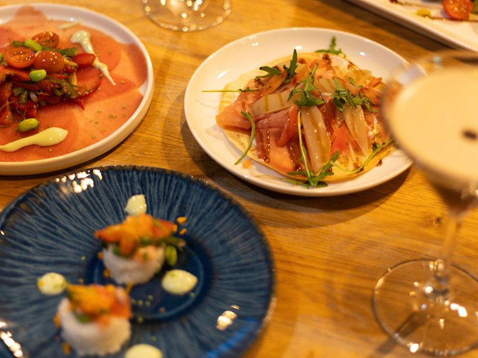
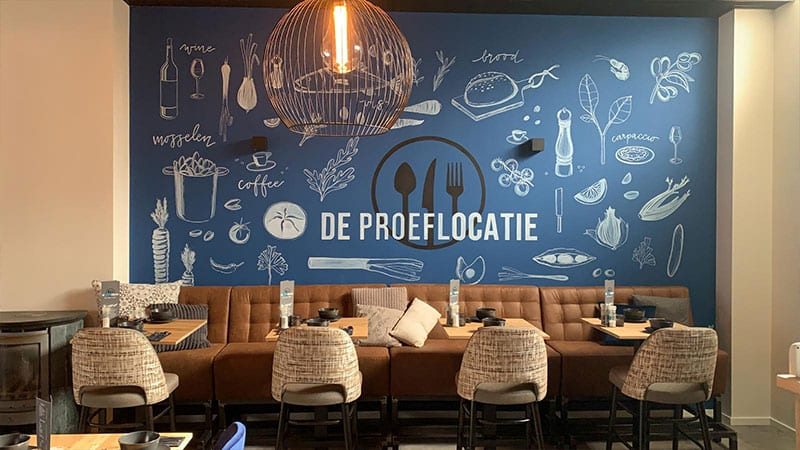
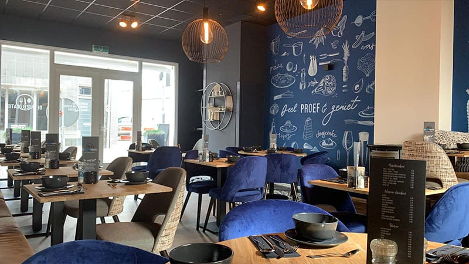
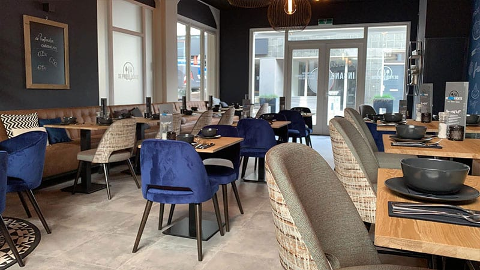
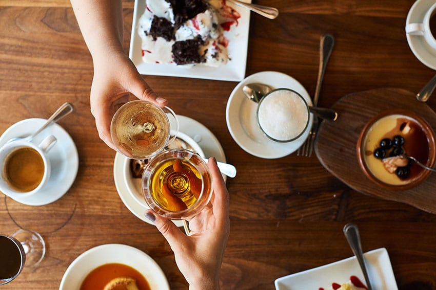

Deel, proef & geniet
Eindeloos genieten van de lekkerste gerechten, midden op tafel om samen te delen.
dinsdag t/m zondag
Dinsdag t/m zondag geopend vanaf 17.00 uur · Korte molenstraat 9A, Cuijk


Hoe werkt het?
Eindeloos genieten voor € 42,95, dinsdag t/m zondag. Onze gerechten worden bereid zodat ze deelbaar zijn. Het aantal rondes bepaalt u zelf!
Kies samen
Samen met uw gezelschap kiest u per ronde maximaal 4 gerechten.
Midden op tafel
De gerechten worden midden op tafel gepresenteerd.
Delen, proeven & genieten
En dan begint het delen, proeven & genieten.
Nog een ronde?
Zin in meer? Kies de volgende 4. Het aantal rondes bepaalt u zelf.
Gaat u naar de schouwburg?
Kom dineren bij De Proeflocatie. Wij zorgen ervoor dat u tijdig klaar bent voor de voorstelling. Voor schouwburgbezoekers is er ook de à-la-cartekaart; reserveren is gewenst.
Zeker zijn van een tafeltje? Reserveer via WhatsApp.
Met wie kom jij delen, proeven & genieten?
Blauwe fluwelen stoelen, eikenhouten tafels en een krijtmuur vol tekeningen: aan de Korte molenstraat in Cuijk.



Vraag & antwoord
Staat uw vraag er niet bij? Neem gerust contact met ons op door te bellen, te mailen of te appen.
Cadeaubonnen
Een avond delen, proeven & genieten cadeau doen.
Vanaf 17.00 uur zijn wij geopend. Een Dinercadeau kunt u bij ons inleveren op dinsdag, woensdag, donderdag en zondag.
Ik heb een gluten- of lactose-allergie. Hoe weet ik wat ik kan bestellen?
Het is zeker mogelijk om met een allergie bij ons te eten. Vraag naar onze allergenenkaart: gluten of lactose. Heeft u een andere allergie? Neem contact met ons op!
Onze keukenbrigade doet zijn uiterste best om rekening te houden met allergieën. Wij kunnen echter niet uitsluiten dat een gerecht sporen bevat van een stof waarvoor u allergisch bent.
Ik heb een maagverkleining gehad en eet minder dan gemiddeld. Betaal ik dan toch het volledige bedrag?
Ja, dat klopt! Bij ons geldt deel, proef & geniet eindeloos. Het is een totaalbeleving en gezellig avondvullend.
Hoe kan ik reserveren?
U kunt reserveren via WhatsApp, mail of telefonisch. Reserveringen per WhatsApp of mail zijn pas definitief na bevestiging.
Wilt u op de dag zelf reserveren voor de avond? Bel of app dan; de mail wordt niet elk moment van de dag gelezen.
Wij behouden ons het recht voor om uw tafel weg te geven als u een half uur na reserveringstijd niet op locatie bent of geen gehoor geeft als wij contact zoeken.
Wat houdt een avondje Proeflocatie precies in?
Eindeloos genieten voor € 42,95 per persoon (dinsdag t/m zondag). Onze gerechten worden bereid zodat ze deelbaar zijn. Samen met uw gezelschap kiest u per ronde maximaal 4 gerechten. Deze worden midden op tafel gepresenteerd en dan begint het delen, proeven & genieten! Het aantal rondes bepaalt u zelf.
Hebben jullie ook kinderprijzen?
Kinderen van 0 tot 3 jaar eten gratis.
Huisdieren
Wij zijn absoluut dierenliefhebbers, alleen ontvangen wij ze niet in ons restaurant. Uiteraard zijn hulphonden van harte welkom ter ondersteuning van hun baasje.
Hoelang mag ik delen, proeven & genieten?
Ons concept is avondvullend: tot 22.30 uur kunt u eindeloos genieten van onze dinerkaart.
Waar kan ik mijn auto parkeren?
- Schouwburg Cuijk, Kaneelstraat, 5431 CH Cuijk (± 300 m). Ma t/m do en za tot 18.00 uur blauwe zone, vrijdag tot 21.00 uur, zondag vrij parkeren.
- Maaskade, Waaistraat, 5431 EN Cuijk (± 400 m).
- Deken van den Ackerhof 8, 5431 DP Cuijk (± 300 m). Ma t/m do en za tot 18.00 uur blauwe zone, vrijdag tot 21.00 uur, zondag vrij parkeren.
- Markt, 5431 CE Cuijk (± 600 m).
Controleer ter plekke of tijden en tarieven nog hetzelfde zijn.
Werken bij De Proeflocatie
Word jij onze volgende topper? Stuur je sollicitatie naar info@deproeflocatie.nl. Laat weten waarom jij ons team wilt komen versterken en op welke dagen je beschikbaar bent.
Reserveren?
Reservering is definitief na bevestiging. Wij behouden ons het recht voor om uw tafel weg te geven als u een half uur na reserveringstijd niet op locatie bent of geen gehoor geeft als wij contact zoeken.